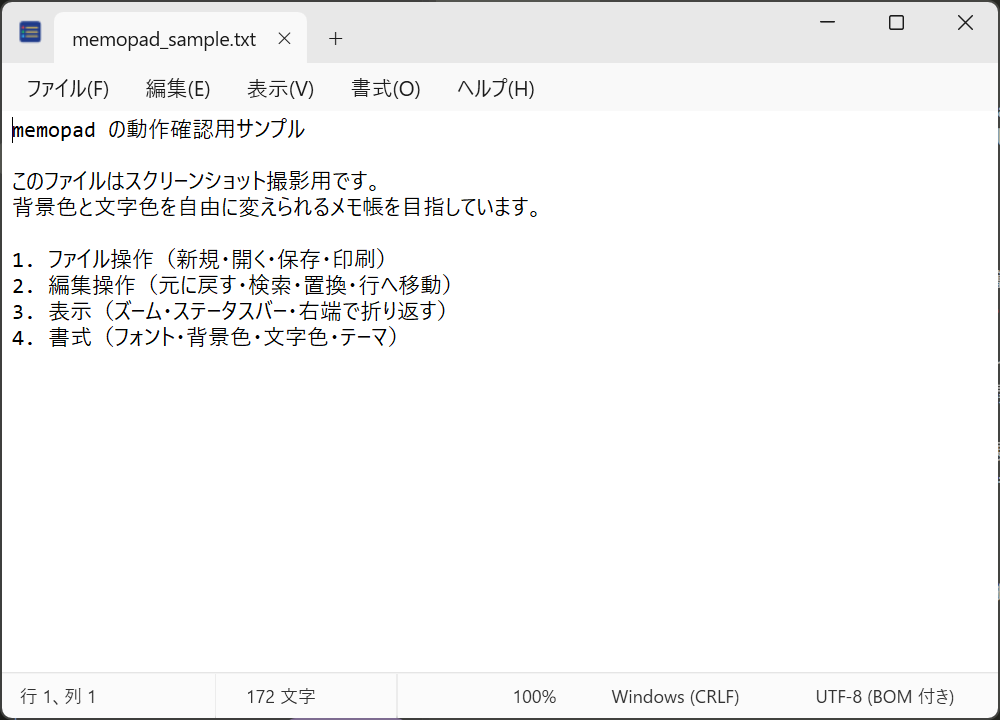

memopad
Windows の「メモ帳」の使い勝手はそのままに、背景色・文字色・フォントを自由に変えられるテキスト エディタ。
Windows 10 / 11（64 ビット）。インストーラ形式（.NET ランタイム同梱、追加のインストール不要）。特長
色変更
背景色と文字色を 1 つの画面で選べます。PICO-8 の 16 色から選ぶか、カラーピッカーで好きな色に。プレビューを見ながら決められます。
配色パターン 16 種
目に優しい配色（生成り、セピア、ミント、夜、墨、コーヒー…）をカードから選ぶと、背景色と文字色が一度に変わります。
メモ帳の機能はそのまま
タブ、検索・置換、行へ移動、ズーム、右端で折り返す、日付と時刻、ページ設定と印刷、エンコード（UTF-8 / ANSI / UTF-16）と改行コードの切り替え。
軽い入力レスポンス
本文の編集部分に Windows 標準の RichEdit を使い、キーを打ってから文字が出るまでの時間はメモ帳と同等（約 20 ms）。日本語入力（IME）も快適です。
ライト／ダーク テーマ
Windows の設定に合わせるか、手動で切り替え。メニューやダイアログもテーマに追従します。
フォント
ファミリ・スタイル・サイズを選べます。日本語部分は自動で適切なフォントに切り替わります。
画面



配色パターン
生成りあいうえお Aa 0123
ソフトグレーあいうえお Aa 0123
セピアあいうえお Aa 0123
ミントあいうえお Aa 0123
ラベンダーあいうえお Aa 0123
ピーチあいうえお Aa 0123
スカイあいうえお Aa 0123
サンドあいうえお Aa 0123
チャコールあいうえお Aa 0123
森あいうえお Aa 0123
夜あいうえお Aa 0123
墨あいうえお Aa 0123
ダークパープルあいうえお Aa 0123
コーヒーあいうえお Aa 0123
スレートあいうえお Aa 0123
ワインあいうえお Aa 0123
ダウンロードとインストール
- Releases から
memopad-setup-<バージョン>.exeをダウンロードします。 - 実行してインストールします（管理者権限なしでユーザー単位にインストールできます）。「テキスト文書を memopad で開く」の関連付けはインストール時に選べます。
- スタート メニューの memopad から起動します。設定は
%APPDATA%\memopad\settings.jsonに保存されます。
「WindowsによってPCが保護されました」と表示された場合
コード署名証明書（有償）を付けていないための表示で、ソフト自体に問題があるわけではありません。次のどちらかで進められます。
コード署名証明書（有償）を付けていないための表示で、ソフト自体に問題があるわけではありません。次のどちらかで進められます。
- その画面内の「詳細情報」をクリック→ 発行元「不明な発行元」の下に出る「実行」をクリック
- または、ダウンロードした .exe を右クリック→「プロパティ」→ 下部の「セキュリティ: このファイルは他のコンピューターから取得したものです…」にある「許可する」にチェック→ OK。その後は警告なしで実行できます
制作について
「シンプルなエディタとしてメモ帳をよく使うが、背景色と文字色を変えられないのが不満」という動機から作りました。メモ帳の機能を洗い出し（step1）、C#／WPF で作り（step2）、実際に使ったフィードバックを反映する（step3）、という流れを 備忘録 にスクリーンショット付きで残しています。ソース コードは GitHub にあります（MIT ライセンス）。